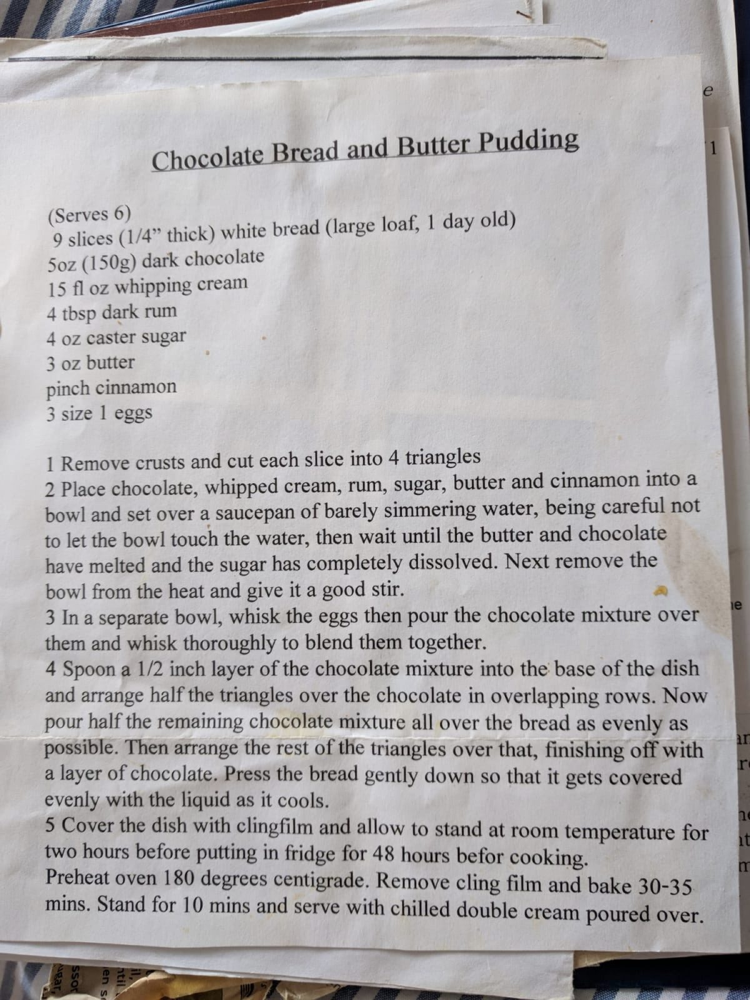

Chocolate Bread and Butter Pudding

Before you start heat the oven to 180°C fan. Needs 2 hours standing at room temperature, then 48 hours in the fridge before cooking.
Ingredients
Method
- Remove the crusts from the 9 slices of white bread and cut each slice into 4 triangles.
- Place the 150g dark chocolate, 450ml double cream, 5 tbsp dark rum, 120g caster sugar, 85g butter, and pinch of ground cinnamon into a bain-marie. Wait until everything has melted and give it a good stir.
- In a separate bowl, whisk the 3 large eggs and then pour over the chocolate mixture, thoroughly blending them together with a whisk.
- Spoon a 1cm layer of the chocolate mixture into the base of the dish.
- Arrange half the triangles over the chocolate layer in overlapping rows.
- Pour half the remaining chocolate mixture over the bread as evenly as possible.
- Repeat the last two steps and press the bread down gently so that it gets covered evenly with the liquid as it cools.
- Cover the dish with clingfilm and allow to stand at room temperature for 2 hours before putting in fridge for 48 hours before cooking.
- Preheat oven to 180°C fan, remove clingfilm, and bake for 30-35 mins.
- Let it stand for 10 mins and serve with double cream or ice cream.